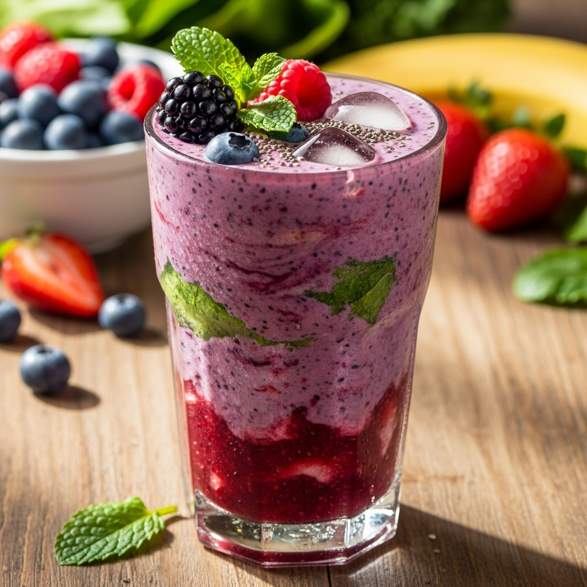

Smoothie

Description
This is an incomplete recipie generated by Microsoft Copilot
for a generic smoothie. If you really want to make a smoothie
you will need more detail. Good luck!
Ingredients
- Fresh or Fruit
- Liquid (milk, yogurt, juice, or water)
- Sweetener (honey, dates, maple syrup, sugar)
- Ice
Steps
- Add Fruit
- Add Liquid
- Add Sweetener
- Blend until smooth
- Adjust texture with ice or liquids
- Server